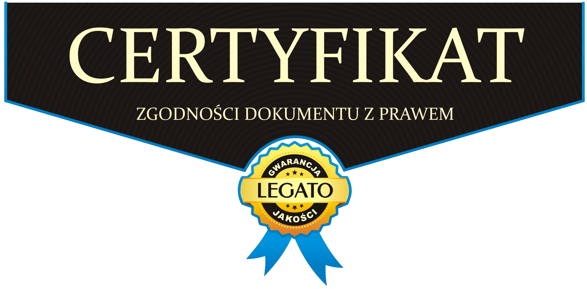

§1 Podstawowe definicje
§2 Postanowienia ogólne
§3 Warunki świadczenia usług
§4 Warunki umowy
§5 Metody płatności
§6 Reklamacje dotyczące usług cyfrowych
§7 Odstąpienie
§8 Postępowanie reklamacyjne
§9 Odpowiedzialność
§10 Pozasądowe sposoby rozpatrywania reklamacji i dochodzenia roszczeń
§11 Postanowienia końcowe
Szanowny Kliencie niniejszy Regulamin reguluje sposób korzystania z aplikacji, zasady realizacji umów zawieranych przy pomocy aplikacji, prawa i obowiązki wynikające z obowiązującego prawa oraz tryb odstąpienia od umowy i postępowania reklamacyjnego. Regulamin składa się z czterech głównych części:
a) w § od 1 do 3 - znajdują się ogólne uregulowania niniejszego Regulaminu;
b) w § do 4 do 7 - został opisany proces korzystania z aplikacji;
c) w § od 8 do 12 - zawarto regulacje związane ze stwierdzeniem wadliwości Usług jak i prawo odstąpienia od umowy;
d) w § 13 - zawarto wszystkie pozostałe uregulowania.
1. Platforma/Aplikacja – aplikacja mobilna wykorzystywana przez Usługodawcę do świadczenia usług drogą elektroniczną, w szczególności umożliwiająca rejestrację Użytkownika, utworzenie i edycję profilu, publikowanie ofert związanych z wydarzeniami, przeglądanie profili i ofert innych Użytkowników, uzyskiwanie dopasowań (match), komunikację z innymi Użytkownikami, wystawianie opinii oraz korzystanie z funkcji bezpieczeństwa, takich jak zgłoszenia i blokowanie użytkowników.
2. Właściciel Platformy / Usługodawca – właścicielem aplikacji (Platformy) jest Kamil Sąder, osoba fizyczna nieprowadząca działalności gospodarczej, ul. Walerego Sławka 9/84, 30-633 Kraków, adres e-mail: savyrr.contact@gmail.com. W razie rozpoczęcia działalności gospodarczej Usługodawca zaktualizuje powyższe dane oraz uzupełni numer NIP/REGON.
3. Adres - ilekroć w Regulaminie jest mowa o adresie rozumie się przez to następujące dane:
a) Siedzibę: ul. Walerego Sławka 9/84, 30-633 Kraków (adres korespondencyjny i adres do doręczeń, w tym do składania reklamacji)
b) adres mailowy: savyrr.contact@gmail.com
4. Klient – osoba fizyczna posiadająca pełną zdolność do czynności prawnych, a w wypadkach przewidzianych przez przepisy powszechnie obowiązujące także osoba fizyczna posiadająca ograniczoną zdolność do czynności prawnych, osoba prawna albo jednostka organizacyjna nieposiadająca osobowości prawnej, której ustawa przyznaje zdolność prawną, która zawarła lub zamierza zawrzeć umowę świadczenia usług z aplikacji.
5. Konsument – art. 221 KC: osoba fizyczna dokonująca czynności prawnej niezwiązanej bezpośrednio z jej działalnością gospodarczą lub zawodową.
6. Usługa – należy przez to rozumieć usługę świadczoną drogą elektroniczną przez Operatora Platformy, polegającą na udostępnieniu narzędzi teleinformatycznych umożliwiających Użytkownikom prezentowanie informacji, nawiązywanie kontaktu, wymianę komunikacji oraz inicjowanie współpracy pomiędzy sobą.
7. Dzień roboczy – jeden dzień od poniedziałku do piątku z wyłączeniem dni ustawowo wolnych od pracy.
8. Ustawa o prawach Konsumenta, ustawa – ustawa z dnia 30 maja 2014 r. o prawach Konsumenta (dziennik ustaw z roku 2014 pozycja 827 z późniejszymi zmianami).
9. Profil- Użytkownik może utworzyć własny profil, zaprezentować siebie innym użytkownikom, publikować oferty związane z wydarzeniami (np. poszukiwanie osoby towarzyszącej na wesele), przeglądać profile innych użytkowników, uzyskiwać dopasowania (match), komunikować się z innymi użytkownikami oraz wystawiać opinie po wydarzeniach. Profil i treści tam umieszczane nie mogą naruszać przepisów prawa i dobrych obyczajów
10. RODO – Rozporządzenie Rady UE 2016/679 (z dnia 27 kwietnia 2016 r. Dz. Urz. UE.L. Nr 119)
1. Usługodawca oświadcza, że przestrzega wszelkich wymaganych zasad ochrony danych osobowych Klientów jakie są przewidziane między innymi Ustawa z dnia 10 maja 2018 r. o ochronie danych osobowych oraz zgodnie z przepisami RODO oraz późniejszych rozporządzeń Ministra Spraw Wewnętrznych i Administracji w sprawie dokumentacji przetwarzania danych osobowych oraz warunków technicznych i organizacyjnych, jakim powinny odpowiadać urządzenia i systemy informatyczne służące do przetwarzania danych osobowych. Klient wyraża zgodę na gromadzenie, przechowywanie i przetwarzanie przez Platformę danych osobowych wyłącznie w celu bezpośrednio związanym z realizacją zamówionej Usługi. Szczegółowe warunki gromadzenia, przetwarzania oraz ochrony danych osobowych określone zostały w „Polityce prywatności”.
2. W związku z wejściem w życie w całej Europie rozporządzenia prawnego (z transpozycją dyrektywy (UE) 2019/2161 do prawa krajowego) dotyczącego opinii: przedsiębiorcy, którzy udostępniają opinie, muszą poinformować, czy i w jaki sposób zapewniono, aby publikowane opinie pochodziły od konsumentów, którzy używali danego produktu lub go nabyli. Środki podjęte w tym celu muszą być konkretnie wymienione. Oświadczamy że opinie zamieszczone pochodzą od rzeczywistych klientów którzy korzystali z aplikacji. Opinie zostały wystawione zgodnie z przesłaną prośba o ich wystawienie po potwierdzeniu że klient skorzystał z usługi. Jeżeli w przyszłości Usługodawca zdecyduje się prezentować opinie pochodzące z zewnętrznych źródeł, np. z wizytówki Google, użytkownicy zostaną o tym wyraźnie poinformowani, a takie opinie będą oznaczone jako pochodzące ze źródła zewnętrznego.
3. Obowiązkowe podstawy prawne w/w uregulowań:
a) Dyrektywa Parlamentu Europejskiego i Rady (UE) 2019/2161 z dnia 27 listopada 2019 r. zmieniająca dyrektywę Rady 93/13/EWG i dyrektywy Parlamentu Europejskiego i Rady 98/6/WE, 2005/29/WE oraz 2011/83/UE w odniesieniu do lepszego egzekwowania i unowocześnienia unijnych przepisów dotyczących ochrony konsumenta, OJ L 328, 18.12.2019, s. 7–28.
b) Fałszowanie opinii w internecie – doświadczenia konsumentów, na podstawie badania PBS Sp. z o.o. na zlecenie UOKIK, publikacja dostępna https://uokik.gov.pl/aktualnosci.php?news_id=17411
c) Dyrektywa 2005/29/WE Parlamentu Europejskiego i Rady z dnia 11 maja 2005 r. dotycząca nieuczciwych praktyk handlowych stosowanych przez przedsiębiorstwa wobec konsumentów na rynku wewnętrznym oraz zmieniająca dyrektywę Rady 84/450/EWG, dyrektywy 97/7/WE, 98/27/WE i 2002/65/WE Parlamentu Europejskiego i Rady oraz rozporządzenie (WE) nr 2006/2004 Parlamentu Europejskiego i Rady („Dyrektywa o nieuczciwych praktykach handlowych”) (OJ L 149, 11.6.2005, p. 22–39, z późn. zmianami).
d) Zawiadomienie Komisji – Wytyczne dotyczące wykładni i stosowania dyrektywy 2005/29/WE Parlamentu Europejskiego i Rady dotyczącej nieuczciwych praktyk handlowych stosowanych przez przedsiębiorstwa wobec konsumentów na rynku wewnętrznym, OJ C 526, 29.12.2021, s. 1–129.
e) Dyrektywa Parlamentu Europejskiego i Rady 2011/83/UE z dnia 25 października 2011 r. w sprawie praw konsumentów, zmieniająca dyrektywę Rady 93/13/EWG i dyrektywę 1999/44/WE Parlamentu Europejskiego i Rady oraz uchylająca dyrektywę Rady 85/577/EWG i dyrektywę 97/7/WE Parlamentu Europejskiego i Rady (OJ L 304, 22.11.2011, p. 64–88, z późn. zmianami).
4. Administrator danych stosuje odpowiednie środki techniczne i organizacyjne zapewniające ochronę danych osobowych miarodajnie do zagrożeń oraz kategorii danych objętych ochroną. Przede wszystkim chroni dane przed ich udostępnieniem, zabraniem, przetwarzaniem, utratą, zmianą uszkodzeniem lub zniszczeniem przez osoby do tego nieuprawnione. Szczegółowy zakres ochrony uregulowany został zgodnie z wymaganiami w polityce Ochrony Danych osobowych (polityka bezpieczeństwa, regulamin ochrony danych osobowych, instrukcja zarządzania systemem informatycznym).
5. Każdej osobie której dane są przetwarzane przysługuje prawo do:
a) nadzorowania i kontroli przetwarzania danych osobowych, dla których Administrator prowadzi zbiór danych klientów w/w Platformy;
b) uzyskania wyczerpującej informacji, czy taki zbiór istnieje i jest prowadzony przez Administratora;
c) ustalenia kto jest administratorem danych, ustalenia jego adresu, siedziby, nazwy, w sytuacji gdy administratorem jest osoba fizyczna do ustalenia jej imienia i nazwiska oraz miejsca zamieszkania;
d) uzyskania informacji o celu, zakresie, sposobie, czasie przetwarzania danych zawartych w takim zbiorze;
e) uzyskania informacji w powszechnie zrozumiałej formie treści tych danych;
f) poznania źródła, z którego pochodzą dane, które jej dotyczą, chyba że administrator danych jest zobowiązany do zachowania w tym zakresie w tajemnicy informacji niejawnych lub zachowania tajemnicy zawodowej;
g) żądania uzupełnienia, uaktualnienia, sprostowania danych osobowych, czasowego zawieszenia lub ich usunięcia, jeżeli są one niekompletne, nieaktualne, nieprawdziwe lub zostały zebrane z naruszeniem ustawy albo są już zbędne do realizacji celu, dla którego zostały zebrane.
6. Klientowi zgodnie z punktem 6 przysługuje prawo wglądu w treść przetwarzanych danych osobowych, ich poprawiania, a także żądania usunięcia tych danych. Administrator danych osobowych jest obowiązany, do uzupełnienia, uaktualnienia, sprostowania danych, czasowego lub stałego wstrzymania przetwarzania lub ich usunięcia ze zbioru na bieżąco i od razu po zgłoszeniu, chyba że żądanie dotyczy danych osobowych, co do których tryb ich uzupełnienia, uaktualnienia lub sprostowania określają odrębne przepisy prawa w tym ustawy.
7. Użytkownik podczas rejestracji konta akceptuje Regulamin oraz potwierdza zapoznanie się z Polityką prywatności. Dane osobowe Użytkownika są przetwarzane w zakresie niezbędnym do utworzenia konta i świadczenia Usługi, na zasadach określonych w Polityce prywatności. Dane mogą być przekazywane innym podmiotom wyłącznie w przypadkach wymaganych prawem lub niezbędnych do świadczenia Usługi.
8. Klient korzystający z Usług Platformy realizowanych za pośrednictwem aplikacji zobowiązany jest do przestrzegania niniejszego Regulaminu w zakresie jaki jest niezbędny ii nie jest sprzeczny z obowiązującym prawem oraz z zasadami współżycia społecznego.
9. Przedsiębiorca prowadzący jednoosobowo działalność gospodarczą, jeśli dokona zakupu, który nie ma związku z prowadzoną przez niego działalnością posiada prawo do odstąpienia od umowy w terminie 14 dni kalendarzowych, z zastrzeżeniem art. 28 ustawy konsumenta o których poniżej.
10. Ochronę konsumencką stosuje się do osoby fizycznej zawierającej umowę bezpośrednio związaną z jej działalnością gospodarczą, gdy z treści tej umowy wynika, że nie posiada ona dla tej osoby charakteru zawodowego, wynikającego w szczególności z przedmiotu wykonywanej przez nią działalności gospodarczej, udostępnionego na podstawie przepisów o Centralnej Ewidencji i Informacji o Działalności Gospodarczej.
11. Przedsiębiorcy prowadzący jednoosobowo działalność mają uprawnienia w zakresie:
● niedozwolonych klauzul stosowanych we wzorcach umownych;
● rękojmi za wady;
● roszczenia regresowego do poprzedniego usługodawcy w związku z wykonaniem reklamacji konsumenta;
● prawa odstąpienia od umowy zawartej na odległość lub poza lokalem przedsiębiorstwa w terminie 14 dni;
12. Przepisy dotyczące konsumenta, zawarte w art. 385(1)-385(3) k.c. [dotyczących niedozwolonych postanowień umownych] stosuje się do osoby fizycznej zawierającej umowę bezpośrednio związaną z jej działalnością gospodarczą, gdy z treści tej umowy wynika, że nie posiada ona dla niej charakteru zawodowego, wynikającego w szczególności z przedmiotu wykonywanej przez nią działalności gospodarczej, udostępnionego na podstawie przepisów o Centralnej Ewidencji i Informacji o Działalności Gospodarczej.
1. Niniejsza Platforma świadczy usługi za pomocą drogi elektronicznej. Warunkiem rozpoczęcia korzystania z Usługi jest utworzenie konta Użytkownika w aplikacji (rejestracja przy wykorzystaniu zewnętrznego dostawcy tożsamości – Sign in with Google lub Sign in with Apple) oraz akceptacja Regulaminu i Polityki Prywatności. Korzystanie z Usługi jest dobrowolne. Z Usługi mogą korzystać wyłącznie osoby, które ukończyły 18 lat.
2. Platforma stanowi narzędzie cyfrowe umożliwiające Użytkownikom tworzenie profili, uzyskiwanie dopasowań, komunikację oraz korzystanie z funkcji społecznościowych i matchmakingowych.
3. W ramach Platformy klient może skorzystać z następujących funkcjonalności:
a. Rejestracja i logowanie.
b. Tworzenie i edycja profilu użytkownika.
c. Dodawanie zdjęć profilowych.
d. Ustalanie preferencji dotyczących dopasowań.
e. Publikowanie ofert weselnych i ofert związanych z wydarzeniami.
f. Przeglądanie profili innych użytkowników.
g. Mechanizm dopasowań (matching).
h. Komunikacja pomiędzy dopasowanymi użytkownikami.
i. System opinii i recenzji po wydarzeniach.
j. Mechanizmy zgłoszeń nadużyć i moderacji.
k. Usuwanie konta oraz eksport wybranych danych.
4. Umowa o świadczenie usług zawierana jest drogą elektroniczną z chwilą utworzenia przez Użytkownika konta w aplikacji i akceptacji niniejszego Regulaminu oraz Polityki Prywatności. Umowa zawierana jest na czas nieoznaczony i ulega rozwiązaniu z chwilą usunięcia konta przez Użytkownika, automatycznego usunięcia konta po 18 miesiącach braku aktywności lub w innych przypadkach przewidzianych w Regulaminie. Proces rejestracji jest zorganizowany tak, aby Użytkownik miał możliwość zapoznania się z treścią Regulaminu i Polityki Prywatności przed ich akceptacją.
5. Usługa określona w pkt. 1 świadczona jest nieodpłatnie, może wymagać jednak dostępu do sieci internetowej.
6. Korzystanie z aplikacji jest możliwe 24 godziny na dobę, 7 dni w tygodniu, z zastrzeżeniem przerw technicznych, prac konserwacyjnych lub awarii niezależnych od Usługodawcy.
7. Użytkownik, dokonując rejestracji konta, akceptuje Regulamin oraz Politykę Prywatności poprzez zaznaczenie odpowiednich pól (checkboxów). Akceptacja Regulaminu i Polityki Prywatności jest niezbędna do zawarcia umowy o świadczenie usług drogą elektroniczną. Podanie danych osobowych wymaganych w aplikacji jest dobrowolne, jednak niezbędne do korzystania z Usługi; brak ich podania uniemożliwi rejestrację i korzystanie z aplikacji.
8. Z Usługi mogą korzystać wyłącznie osoby pełnoletnie, które ukończyły 18 lat. Rejestracja w aplikacji oraz korzystanie z jej funkcjonalności (w szczególności tworzenie profilu, publikowanie ofert i korzystanie z funkcji dopasowań) przez osoby, które nie ukończyły 18 lat, jest niedozwolone. Usługodawca, uwzględniając dostępną technologię, podejmuje rozsądne starania w celu weryfikacji wieku Użytkownika (m.in. obowiązkowe wskazanie daty urodzenia przy rejestracji, mechanizmy zgłoszeń i moderacji); w razie powzięcia uzasadnionych wątpliwości co do pełnoletności Użytkownika Usługodawca zastrzega sobie prawo do zablokowania lub usunięcia konta.
9. Koszty Klienta związane z dostępem do sieci Internet i transmisją danych ponoszone są wyłącznie przez Klienta zgodnie z taryfą swojego dostawcy z którym klient podpisał umowę o świadczenie usług internetowych.
1. Usługa ma charakter wyłącznie kojarzący (matchmakingowy). Usługodawca nie odpowiada za ewentualne nadużycia lub naruszenia prawa użytkowników po ich skojarzeniu.
2. Innym użytkownikom prezentowane są wyłącznie informacje niezbędne do korzystania z funkcjonalności społecznościowych aplikacji. Może to obejmować wybrane informacje profilowe, zdjęcia profilowe, przybliżoną odległość, informacje o ofertach oraz opinie. Dane uwierzytelniające, dokładne dane lokalizacyjne oraz dane techniczne nie są publicznie udostępniane innym użytkownikom.
3. Rejestracja Konta Klienta w Platformie jest dobrowolna i nieodpłatna. Proces rejestracji konta w Platformie dla Przedsiębiorców i Konsumentów został uregulowany odrębnie.
4. Użytkownik może usunąć konto bezpośrednio z poziomu aplikacji mobilnej. Usunięcie konta skutkuje trwałym usunięciem konta użytkownika oraz powiązanych danych zgodnie z architekturą działania usługi. Usuwane są m.in. dane konta, profil użytkownika, zdjęcia profilowe, dane uwierzytelniające oraz dane bezpośrednio związane z aktywnym kontem.
5. Konta nieaktywne mogą być automatycznie usuwane po długim okresie braku aktywności.
Korzystanie z podstawowych funkcjonalności aplikacji jest nieodpłatne. Aplikacja przewiduje funkcje dodatkowe (np. „Boost”, „Oferta Premium”), które obecnie są udostępnione użytkownikom nieodpłatnie. Usługodawca zastrzega sobie prawo do wprowadzenia odpłatności za te lub inne funkcje dodatkowe w przyszłości.
W przypadku wprowadzenia odpłatności, płatności będą realizowane wyłącznie za pośrednictwem mechanizmów udostępnianych przez sklepy z aplikacjami, z których użytkownik pobrał aplikację: App Store (Apple Inc.) – mechanizm In-App Purchase / subskrypcje, zgodnie z regulaminem App Store; Google Play (Google LLC) – Google Play Billing / subskrypcje, zgodnie z regulaminem Google Play. Usługodawca nie przyjmuje płatności bezpośrednio (np. przelewem, kartą poza systemami sklepów aplikacji).
Wszelkie kwestie związane z realizacją płatności, zwrotami, reklamacjami płatności, zmianą lub anulowaniem subskrypcji odbywają się zgodnie z regulaminami i procedurami Apple Inc. (App Store) lub Google LLC (Google Play). Użytkownik powinien zapoznać się z tymi regulaminami przed dokonaniem zakupu funkcji odpłatnych.
Ceny funkcji odpłatnych prezentowane są w aplikacji oraz w odpowiednich sklepach aplikacji wraz z należnymi podatkami. Faktura lub potwierdzenie zakupu wystawiane są przez właściwy sklep aplikacji zgodnie z jego regulaminem.
O każdym uruchomieniu funkcji odpłatnych Usługodawca poinformuje użytkowników z wyprzedzeniem, w sposób przewidziany w §11 niniejszego Regulaminu (zmiana Regulaminu).
1. Użytkownik ma prawo zgłosić reklamację dotyczącą nieprawidłowego działania aplikacji lub świadczonych usług drogą elektroniczną.
2. Reklamacja może zostać złożona drogą elektroniczną na adres e-mail wskazany w Regulaminie.
3. Reklamacja powinna zawierać dane umożliwiające identyfikację Użytkownika oraz opis zgłaszanego problemu.
4. Administrator rozpatrzy reklamację w terminie 14 dni od dnia jej otrzymania i poinformuje Użytkownika o sposobie jej rozpatrzenia.
5. W przypadku odpłatnych usług cyfrowych Użytkownikowi przysługują prawa wynikające z obowiązujących przepisów prawa konsumenckiego..
1. W przypadku wprowadzenia odpłatnych usług cyfrowych Użytkownikowi będącemu konsumentem przysługiwać będą prawa wynikające z ustawy o prawach konsumenta.
2. Jeżeli świadczenie odpłatnej usługi cyfrowej rozpocznie się przed upływem terminu na odstąpienie od umowy, Użytkownik zostanie poproszony o wyrażenie odpowiedniej zgody zgodnie z obowiązującymi przepisami.
3. Szczegółowe zasady odstąpienia od umowy dotyczące odpłatnych usług cyfrowych będą każdorazowo prezentowane Użytkownikowi przed dokonaniem zakupu.
1. Reklamacje związane z działaniem aplikacji mogą być składane drogą elektroniczną na adres kontaktowy Administratora.
2. Reklamacja powinna zawierać opis problemu oraz dane umożliwiające identyfikację Użytkownika.
3. Administrator rozpatrzy reklamację w terminie 14 dni od dnia jej otrzymania.
4. Odpowiedź na reklamację zostanie przekazana drogą elektroniczną, chyba że Użytkownik zażąda innej formy kontaktu.
1. Po wydarzeniach użytkownicy mogą wystawiać opinie i oceny dotyczące innych użytkowników. W przypadku usunięcia konta użytkownika usuwane są zdjęcia profilowe, shared memories / shared photos oraz powiązanie opinii z aktywnym kontem użytkownika. W systemie może pozostać treść opinii, ocena oraz zapisane imię autora opinii jako element wcześniej opublikowanej treści użytkownika.
2. Klient nie jest uprawniony do:
a) zamieszczania danych osobowych osób trzecich, rozpowszechniania wizerunku bez wymaganego zezwolenia lub zgody osoby trzeciej której dane te dotyczą;
b) zamieszczania treści o charakterze reklamowym i lub promocyjnym, niezgodny z celem działalności aplikacji.
3. Zabronione jest zamieszczanie przez Klient treści:
a) z zamiarem naruszenia dóbr osobistych osób trzecich;
b) w złej wierze bądź takich które mogły by być za takie uznane;
c) naruszających prawa osób trzecich, praw autorskich, praw pokrewnych, praw własności przemysłowej, tajemnicy przedsiębiorstwa lub objętych klauzulą poufności zwłaszcza określanych jako tajne lub ściśle tajne;
d) obraźliwych bądź stanowiących groźbę skierowaną do innych osób, wypowiedzi powszechnie uważanych za obraźliwe np. wulgaryzmy;
e) naruszających słuszne interesy usługodawcy;
f) rozsyłanie lub umieszczanie w ramach aplikacji niezamówionej informacji handlowej (spam);
g) naruszających w inny sposób dobre obyczaje, przepisy obowiązującego prawa, normy społeczne lub obyczajowe.
4. W przypadku otrzymania powiadomienia przez osobę trzecią, uprawnioną bądź organ władzy Państwowej usługodawca zastrzega sobie prawo do modyfikowania lub usuwania treści zamieszczanych przez Klient, w sytuacji stwierdzenia że mogą one stanowić naruszenie niniejszego Regulaminu lub obowiązujących przepisów prawa. usługodawca nie kontroluje na bieżąco zamieszczanych treści.
5. Administrator nie gwarantuje prawdziwości informacji publikowanych przez użytkowników i nie ponosi odpowiedzialności za zachowania użytkowników poza aplikacją, w tym podczas kontaktów i spotkań offline organizowanych z inicjatywy użytkowników.
6. Usługodawca nie jest stroną relacji, spotkań ani ustaleń pomiędzy Użytkownikami poza aplikacją. Użytkownicy podejmują decyzję o kontakcie, spotkaniu lub udziale w wydarzeniu na własną odpowiedzialność. Usługodawca nie gwarantuje zachowania, intencji, tożsamości ani bezpieczeństwa innych Użytkowników, jednak udostępnia mechanizmy zgłaszania nadużyć, blokowania użytkowników oraz moderacji.
1. Informacje o pozasądowych sposobach rozpatrywania reklamacji i dochodzenia roszczeń, a także zasady dostępu do tych procedur udostępniane są w siedzibach oraz na stronach internetowych powiatowych (miejskich) rzeczników Konsumentów, organizacji społecznych, do których zadań statutowych należy ochrona Konsumentów, Wojewódzkich Inspektoratów Inspekcji Handlowej oraz pod następującymi adresami Urzędu Ochrony Konkurencji i Konsumentów: www.uokik.gov.pl/spory_konsumenckie.php,www.uokik.gov.pl/wazne_adresy.php, www.uokik.gov.pl/sprawy_indywidualne.php
2. Konsument posiada między innymi następujące możliwości skorzystania z pozasądowych sposobów rozpatrywania reklamacji i dochodzenia swoich roszczeń:
3. zwrócenie się do Wojewódzkiego Inspektora Inspekcji Handlowej z wnioskiem o wszczęcie postępowania mediacyjnego w sprawie polubownego zakończenia sporu.
4. zwrócenie się do stałego polubownego Sądu Konsumenckiego działającego przy Wojewódzkim Inspektorze Inspekcji Handlowej z wnioskiem o rozstrzygnięcie sporu wynikłego z zawartej umowy, adres www.uokik.gov.pl/wazne_adresy.php.
5. zwrócenie się o bezpłatną pomoc prawną m.in. do Federacji Konsumentów - adres strony internetowej: www.federacjakonsumentow.org.pl.
6. W rozwiązywaniu sporów transgranicznych pomaga Sieć Europejskich Centrów Konsumenckich. Adresy tych instytucji dostępne są na stronie internetowej Europejskiego Centrum Konsumenckiego www.konsument.gov.pl.
7. Skorzystanie z pozasądowych sposobów rozpatrywania reklamacji i dochodzenia roszczeń ma charakter dobrowolny i może mieć miejsce tylko i wyłącznie gdy obie strony sporu tj usługodawca i Klient wyrażą na to zgodę.
1. Platforma honoruje wszelkie prawa Klientów przewidziane w przepisach obowiązującego prawa.
2. Jeśli obowiązujące prawo przyznaje Klientom będącym konsumentami korzystniejsze obowiązkowe i wymagane prawem uregulowania niż te, które są zawarte w niniejszym Regulaminie, odpowiednie postanowienia Regulaminu są bezpośrednio zastępowane przez konkretne normy obowiązującego prawa i tym samym są wiążące dla w/w właściciela.
3. Wszelkie treści zamieszczone na Platformie (wliczając w to grafikę, teksty, układ stron i logotypy) korzystają z ochrony przewidzianej dla praw autorskich i są wyłączną jego własnością. Wykorzystywanie tych treści bez pisemnej zgody skutkuje odpowiedzialnością cywilną oraz karną.
4. Właściciel Platformy, jako administrator danych osobowych, informują Pana/ Panią, iż:
● podanie danych jest zawsze dobrowolne ale niezbędne do realizacji zamówienia;
● osoba podająca swoje dane osobowe ma nieograniczone prawo dostępu do wszystkich treści swoich danych i ich sprostowania, usunięcia (prawo do bycia zapomnianym), ograniczenia przetwarzania, prawo do przenoszenia danych, prawo do cofnięcia zgody w dowolnym momencie bez wpływu na zgodność z prawem przetwarzania, dane mogą być udostępnione jednak właściwym organom państwa w sytuacji gdy odpowiedni przepis tego będzie wymagał.
● Podstawą przetwarzania danych osobowych jest w szczególności art. 6 ust. 1 lit. b RODO, tj. niezbędność przetwarzania do zawarcia i wykonywania umowy o świadczenie Usługi, a w odpowiednich przypadkach także art. 6 ust. 1 lit. c RODO, art. 6 ust. 1 lit. f RODO lub zgoda użytkownika, jeżeli dla danego celu jest wymagana.
● dane osobowe będą przechowywane i przetwarzane wyłącznie przez okres niezbędny do realizacji Usługi oraz po jej zakończeniu w zakresie i przez okres wynikający z obowiązujących przepisów prawa, w szczególności: (a) dane konta użytkownika (profil, zdjęcia, treści, dane logowania) – przez okres aktywności konta; po 12 miesiącach braku aktywności użytkownik otrzymuje ostrzeżenie, a po 18 miesiącach braku aktywności konto wraz z powiązanymi danymi jest trwale usuwane; (b) dane niezbędne do dochodzenia lub obrony przed roszczeniami oraz dokumentacja księgowa i podatkowa – przez okres wymagany odpowiednimi przepisami, nie dłużej niż 10 lat licząc od końca roku kalendarzowego, w którym ostatnia umowa została wykonana; (c) dane przetwarzane na podstawie zgody – do czasu jej wycofania; szczegółowe okresy retencji określa Polityka Prywatności;
● osoba udostępniająca swoje dane osobowe ma prawo wniesienia skargi do UODO gdy uzna że przetwarzanie danych osobowych dotyczących realizacji zamówienia narusza przepisy ogólnego rozporządzenia o ochronie danych osobowych z dnia 27 kwietnia 2016 r.;”
5. W zakresie przetwarzania danych osobowych nie został stwierdzony przez Komisję Europejską odpowiedni stopień ochrony w drodze decyzji ale dane będą odpowiednio zabezpieczone za pomocą rozwiązań i środków informatyczno/prawnych.
6. Państwa dane będą przetwarzane w sposób zautomatyzowany, w tym w formie profilowania – wyłącznie w celu realizacji funkcji aplikacji (m.in. dopasowań/matchmaking, filtrowania profili i ofert według preferencji użytkownika, rankingu prezentowanych ofert, ewentualnego mechanizmu „Boost”). Profilowanie nie wywołuje wobec użytkownika skutków prawnych ani w podobny sposób istotnie na niego nie wpływa w rozumieniu art. 22 RODO. Szczegóły profilowania określa Polityka Prywatności.
7. W pozostałych kwestiach nieuregulowanych zapisami niniejszego Regulaminu mają zastosowanie odpowiednie przepisy prawa polskiego.
8. Zmieniony Regulamin wiąże Klientów jeżeli zostały zachowane wymagania określone w art. 384 Kodeksu cywilnego (tj. Klient został prawidłowo powiadomiony o zmianach).
9. Zmiany regulaminu nie mają wpływu na złożone i realizowane już zamówienia, do nich zastosowanie ma regulamin obowiązującym w chwili złożenia zamówienia. Usługodaca o zamierzonej zmianie informuje w aplikacji lub za pośrednictwem poczty elektronicznej co najmniej na 30 dni wcześniej. W przypadku braku akceptacji zmienionego regulaminu Usługobiorcy mogą w terminie 30 dni od dnia otrzymania wiadomości wypowiedzieć umowę ze skutkiem natychmiastowym.
10. Spory powstałe w wyniku świadczenia usług na podstawie niniejszego Regulaminu zostaną poddane pod rozstrzygnięcie Sądowi Powszechnemu według wyboru Klienta będącego jednocześnie konsumentem, zgodnie z właściwymi przepisami prawa polskiego.
11. Załączniki do Regulaminu stanowią jego integralną część.
12. W sprawdzonym zakresie działania usługi nie przewiduje się sprzedaży danych osobowych użytkowników. Aplikacja nie wykorzystuje reklam behawioralnych ani zewnętrznych systemów reklamowego śledzenia użytkowników.
13. Klienci w/w Platformy mogą uzyskać dostęp do niniejszego Regulaminu w każdym czasie za pośrednictwem odsyłacza oraz pobrać go i sporządzić jego wydruk, komercyjne wykorzystanie podlega jednak ochronie Kancelarii Prawnej LEGATO.
14. Regulamin wchodzi w życie z dniem …………………….
Nota o prawach autorskich do Regulaminu
Właścicielem wszystkich materialnych praw autorskich do wzorca niniejszego Regulaminu jest Kancelaria Prawna LEGATO, która udzieliła niniejszemu Portalowi niewyłącznego i niezbywalnego prawa do wykorzystywania tego Regulaminu do celów związanych z własną działalnością handlową w Internecie oraz rozciąga ochronę prawną na w/w dokument na czas trwania umowy. Kopiowanie oraz rozpowszechnianie wzorca niniejszego Regulaminu bez zgody Kancelarii Prawnej LEGATO jest zabronione i może podlegać odpowiedzialności zarówno karnej jak i cywilnej. Podmioty trzecie mogą dowiedzieć się więcej o możliwości korzystania z wzorca Regulaminu na stronie www.kancelaria-legato.pl